options(paged.print = FALSE,
tigris_use_cache = TRUE)
libraries <- list(
"sf", "collapse", "ggplot2", "magrittr", "dplyr",
"zeallot", "patchwork", "spdep", "sfdep"
)
invisible(lapply(libraries, library, character.only = TRUE))
glue <- glue::glue
map <- purrr::map
map2 <- purrr::map2
ggqqplot <- ggpubr::ggqqplot
classIntervals <- classInt::classIntervals
str_replace_all <- stringr::str_replace_all
annotation_map_tile <- ggspatial::annotation_map_tile
ggpairs <- GGally::ggpairs
melt <- reshape2::melt
tidy <- broom::tidy
unnest <- tidyr::unnest
rownames_to_column <- tibble::rowid_to_column
gt <- gt::gt
iif <- kit::iif
year <- 2024
crs <- 6528
caption <- glue("Source: census.gov, acs5, {year}")
abq_data <- st_read("../data/district_variance.gpkg", layer = "abq_data")
council_dists <- st_read("../data/district_variance.gpkg",
layer = "council_dists")Introduction
This is the second part of a short series began here, which looks at demographic and economic variances between city council districts in Albuquerque, New Mexico.1 In the first part, I created a data set of demographic and economic information obtained from the US Census Bureau, and, after cleaning, split the data between Albuquerque’s city council districts and engineered variables appropriate for the analysis. In this part, I would like to explore these variables before doing the actual analysis of variance testing between the districts, which will be the subject of the next article.
This exploration will involve mapping the variables, to see how they are distributed geographically. By overlaying the council districts on the map, one can already get a good sense of the variance between districts. I will also visualize variable distribution and correlation with standard plots.
The larger part of the article will deal with spatial autocorrelation (SA). I will compare three common measures of SA, as well as various ways to define neighborhoods. Again, by overlaying the results with the districts, insights can be gained into the peculiarities of the different districts.
To begin, I’ll load libraries, constants and functions, as well as the data from last time.
Before going further, I want to split the data from the geometries, so I can work with a simpler object for data processing. I’ll preserve the geometries so I can recreate the sf object when I want to do mapping or spatial autocorrelation. Additionally, the geometries are all that is needed for many spatial functions. st_drop_geometry returns a tibble which, while convenient for many things, carries unneeded extra overhead, so I will use the fast qDF to convert to a simple data frame. As you may recall, gv is short for get_vars, a fast function from collapse.
abq_data_geom <- st_geometry(abq_data)
districts <- abq_data %>% st_drop_geometry %>% gv(1)
abq_data %<>% gv(-1) %>% st_drop_geometry %>% qDF
to_sf <- function(df, geometry = abq_data_geom) {
st_sf(df, geometry = geometry)}Visualization
Maps
I will begin by simply mapping the variables. They are all continuous, but I would like to map the data in quantiles. This is convenient with tmap, and one of the few areas where ggplot makes life a bit difficult, since the cuts must be manually generated prior to plotting. Never-the-less, I will use ggplot. First, I’ll create a base plot.
base_plot <- ggplot(council_dists) +
annotation_map_tile(type = "osm", zoomin = -1,
cachedir = "~/.cache/maps/") +
geom_sf(color = "black", linewidth = 0.8) +
geom_sf_label(aes(label = district),
fill = "#A0A050", fontface = "bold") +
labs(caption = caption) + theme_void()The classInt package can identify the break points, which I will use to cut the data. num_vars is a useful function from collapse that efficiently selects the numeric variables from a data frame, or any similar object. The return argument makes it flexible. In this case, rather than grabbing the actual data, I’m just grabbing the variable names.
var_names <- num_vars(abq_data, return = "names")
make_cuts <- function(var) {
quantiles <- classIntervals(var, 5, style = "quantile")
cut(var, quantiles$brks,
ordered_result = T, include.lowest = TRUE, dig.lab = 6)}
cuts <- map(var_names, \(x) make_cuts(abq_data[[x]]))Now I will make the function to build the maps.
quantile_map <- function(cut, lab) {
base_plot +
geom_sf(data = to_sf(abq_data), aes(fill = cut), alpha = 0.5) +
scale_fill_viridis_d() + labs(fill = lab) + theme_void()}And, finally, I will generate the maps with map2(), saving each plot with zeallot’s assignment operator %<-%, after which I can review all or select plots.
c(
pHouse.Value.Med, pGini, pRent.Med, pAge.Med, pIncome.Med,
pForeign.Born.Pct, pHisp.Pct, pCollege.Pct, pPopulation.Density,
pVacant.Pct, pRenter.Occupied.Pct, pHousing.Density
) %<-%
map2(cuts, var_names, \(cut, lab) quantile_map(cut, lab))pHouse.Value.Med + pIncome.Med + plot_annotation(title = "Albuquerque, NM")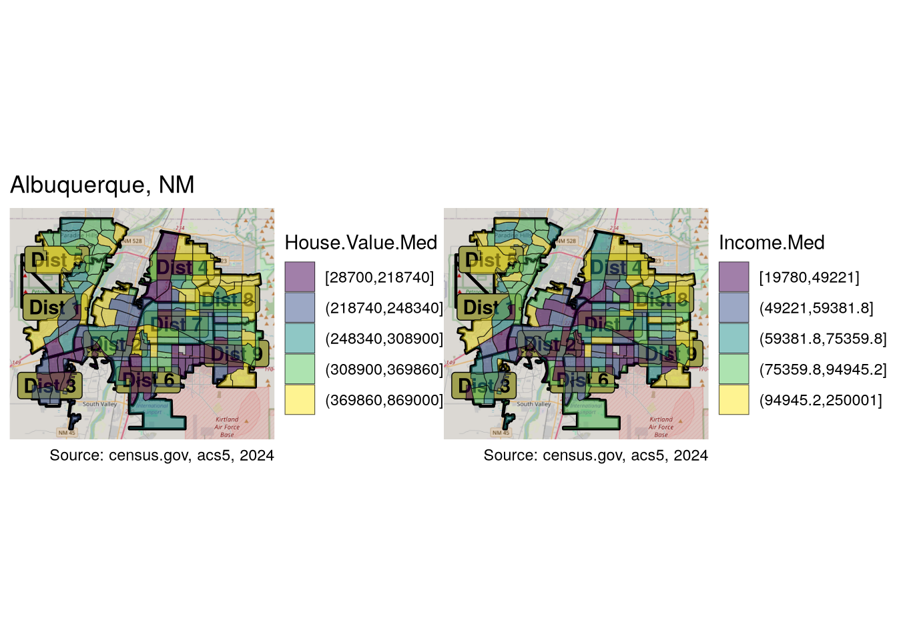
Housing values seem to be highest in the east, northeast and west, as well as in the North Valley near the Rio Grande. District 8 in particular seems to have the most high value tracts. District 4 and District 9, while having some of the highest income tracts, also contain some of the lowest, in many cases adjacent to each other. Income levels follow a similar pattern, although seemingly less extreme in many areas. Some of the highest housing prices in District 8 are not associated with the highest income, while the fourth district has somewhat lower housing prices but higher income levels. The patches of high income in the central areas are those around the University of New Mexico. This “aberration” will be evident when looking at education levels as well.
pHisp.Pct + pCollege.Pct + plot_annotation(title = "Albuquerque, NM")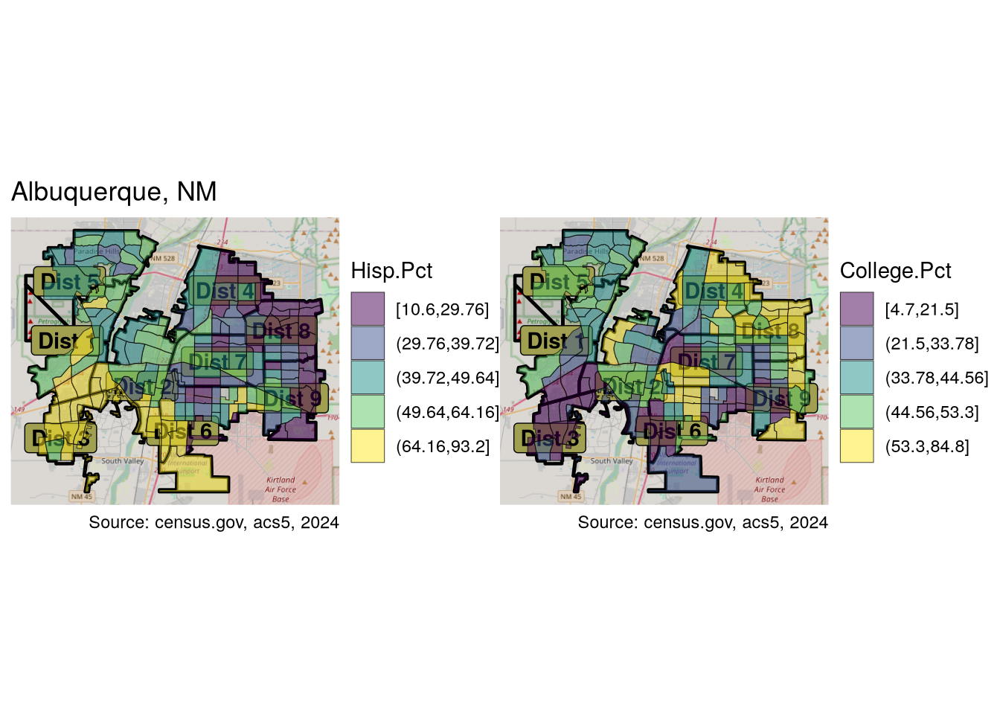
The percentage of Hispanics is highest in the southwest of the city, especially in the third district, and decreasing northward and, much more significantly, eastward. It is in many cases the mirror image of the percentage of college graduates who are most represented in the north-east (eigth district in particular), as well as in the areas around the university. District 3 has the lowest concentration of college graduates.
Plots
For visualizing variable distribution, I will construct a series of histograms and quantile-quantile plots. Note the .data[[var]] syntax in the plotting function, which is necessary to pass variables to aes() when using ggplot within a function.
plot_hist <- function(df, var) {
df %>%
ggplot(aes(.data[[var]])) +
geom_histogram(aes(y = after_stat(density)),
fill = "lightgray", col = "black", bins = 20) +
geom_line(stat = "density", adjust = 2, color = "blue") +
labs(caption = "")}
hists <- map(var_names, \(x) abq_data %>% plot_hist(x))
qqs <- map(var_names, \(x) ggqqplot(abq_data[[x]]))
c(
pHouse.Value.Med, pGini, pRent.Med, pAge.Med, pIncome.Med,
pForeign.Born.Pct, pHisp.Pct, pCollege.Pct, pPopulation.Density,
pVacant.Pct, pRenter.Occupied.Pct, pHousing.Density
) %<-% map(seq_len(length(hists)),
\(x) hists[[x]] + qqs[[x]])Here I will display just a few of the variables.
annotate <- plot_annotation(title = "Variable Distribution",
caption = caption)
pHouse.Value.Med - pIncome.Med + annotate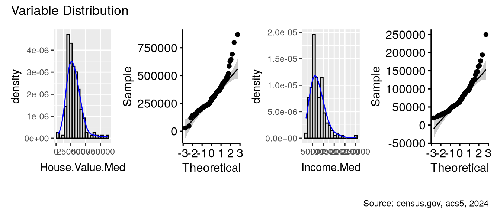
pHisp.Pct - pGini + annotate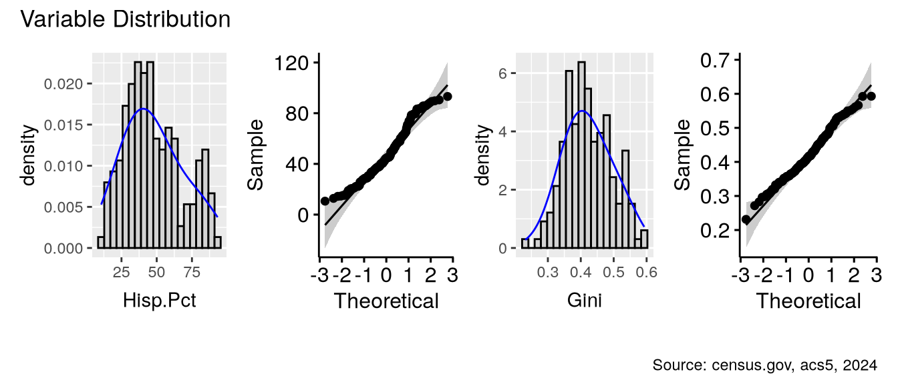
The data is clearly not, for the most part, normally distributed. This will pose challenges to analysis of variance testing later on, and will certainly require appropriate transformations.
Correlation
Next, let’s look at the correlation between variables.
ggpairs(num_vars(abq_data)) + theme_gray(base_size = 8)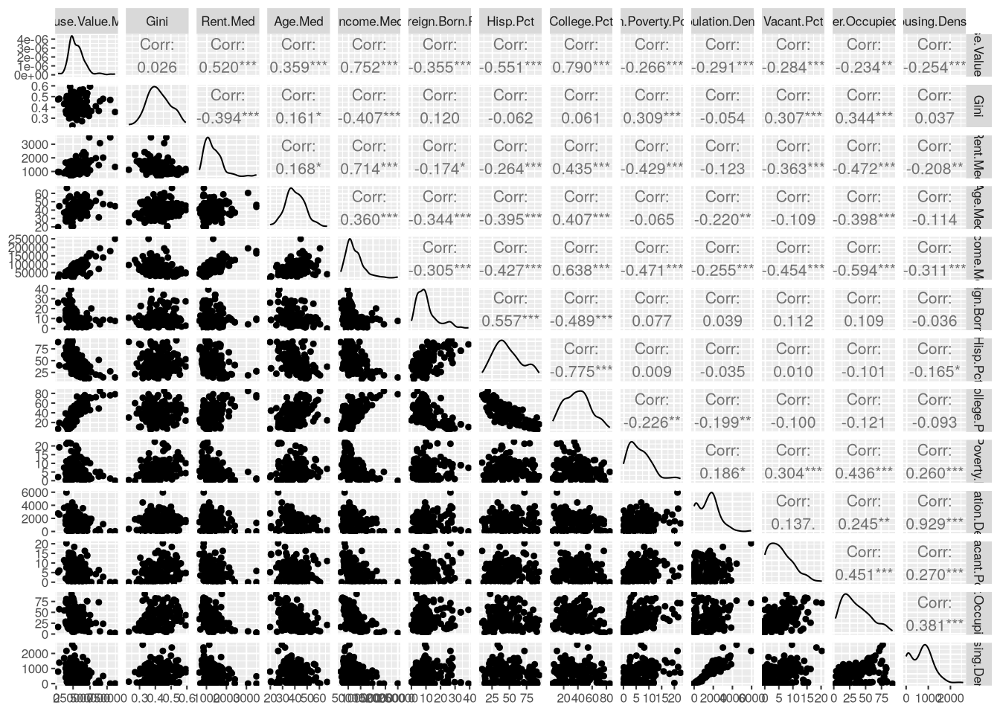
cor(num_vars(abq_data)) %>% melt %>% ggplot() +
geom_tile(aes(x = Var1, y = Var2, fill = value)) +
labs(title = "Correlation Heatmap", x = "Variable 1", y = "Variable 2") +
scale_fill_distiller(palette = "RdBu", direction = 1) +
theme(axis.text.x = element_text(angle = 45, hjust = 1)) +
labs(x = NULL, y = NULL, fill = "Corr", caption = caption)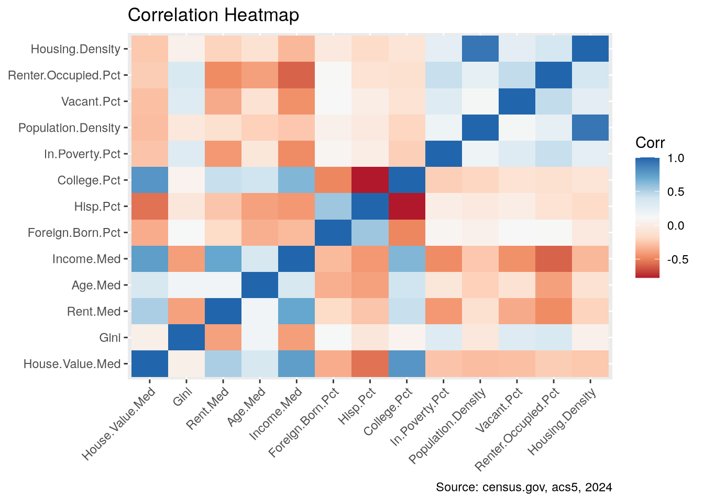
It is not surprising that many variables are correlated, some quite highly. For example housing density and population density. These are so strongly and logically correlated, that I will go ahead and drop one.
settransform(abq_data, Housing.Density = NULL)settransform modifies the dataset by refererence, and is the equivalent of data <- data %>% transform.
Housing values are correlated with income levels, and even more strongly with percentage of college graduates. On the other hand, they show a pretty strong negative correlation with the percentage of Hispanics.
As anticipated, a strong negative correlation between areas with high percentage of Hispanics and those with high percentage of college grads jumps out in the heatmap.
Economic inequality is most evident in areas with a high percentage of rentals, vacancies and lower rent prices. Areas with higher incomes and lower poverty levels have less economic inequality. Neighborhoods with higher incomes have less rental properties.
In data in which so many variables appear correlated, it is interesting to note those which are not. For example, inequality does not seem to be related to any of the demographic variables, only the economic indicators. Inequality seems not to care about age, race, or where one is from.
Spatial autocorrelation
We are influenced by our neighbors, and birds of a feather flock together, as they say. Or, more canonically, “everything is related to everything else, but near things are more related than distant things.”2 As a result, geographically-related variables lose a degree of independence, something typically assumed in regression modeling. Spatial autocorrelation (SA) is based on this idea, and allows us to recognize to what degree variables exhibit spatial dependence.
Three commonly used methods to analyze SA are Moran’s \(I\) , the Getis-Ord Statistic \(G^*_i\), and Geary’s \(C\). Each has both a global and local version, and take somewhat different approaches. The global version asserts the existence or not of SA, while the local version allows for drilling down geographically and mapping areas of particular interest.
Getis-Ord 3 is the simplest. It compares weighted values of neighboring tracts to a target tract, identifying where high values (hot spots) or low values (cold spots), are clustered together. Moran’s \(I\) 4 is the more commonly used test. It compares a tract’s value to the overall mean, and the neighbors’ values to the overall mean, which may by negative or positive in either instance. Tracts with large differences from the mean surrounded by neighbors with large differences from the mean, are identified. With Moran’s, not only are hot spots and cold spots identified, but also areas where particularly low values are surrounded by high values, and vice versa (Low-High and High-Low). Geary’s \(C\)5 is similar, but compares neighboring weighted values directly to each other, rather than in reference to global means, and is considered more sensitive to local SA.
Neighbors and weights
The first step in SA is to define the neighbors. These can be chosen in a number of ways, such as a specified maximum distance between regions, or some arbitrary number of “closest” areas. One common way to define neighbors is based on contiguity. Contiguous regions can be regions which share just a single boundary point, or can require multiple shared points and/or a shared border. The former is described as a “queen” relationship, the latter as a “rook” relationship. (In chess, the rook can only move vertically or horizontally, while the queen can also move diagonally.)
Here I’ll define the neighbors as queen-contiguous. I will first use functions from the spdep package, which is the most commonly used. Later I will use the sfdep package, which provides wrappers to many spdep functions as well as new functions for spatial analysis, and is somewhat easier to work with and integrate into a workflow.
(nb <- poly2nb(abq_data_geom, queen = T, snap = 20))Neighbour list object:
Number of regions: 173
Number of nonzero links: 1060
Percentage nonzero weights: 3.541715
Average number of links: 6.127168 The ploy2nb function defaults to queen, so adding it here is redundant. The snap argument allows for some flexibility in distance in specifying contiguous regions.
Once the neighbors are defined, a weights list must by generated. There are a number of options here. A binary list simply contains ones and zeros, depending on whether and area is contiguous or not. The binary style is preferred with \(G^*\). For others, weighted lists are used. The style argument is used to specify the type of list desired.
nbw <- nb2listw(nb, style = "W")
summary(nbw)Characteristics of weights list object:
Neighbour list object:
Number of regions: 173
Number of nonzero links: 1060
Percentage nonzero weights: 3.541715
Average number of links: 6.127168
Link number distribution:
1 2 3 4 5 6 7 8 9 10 11 12
2 4 13 14 30 38 33 21 9 3 5 1
2 least connected regions:
17 46 with 1 link
1 most connected region:
59 with 12 links
Weights style: W
Weights constants summary:
n nn S0 S1 S2
W 173 29929 173 62.94904 709.7061Global Spatial Autocorrelation
The various tests are easily performed. I’ll start with Moran’s.
map(num_vars(abq_data),
\(x) moran.test(x, nbw, alternative = "two.sided") %>% tidy) %>%
unlist2d %>% gv(c(".id", "statistic", "p.value")) %>% roworder(-statistic) .id statistic p.value
1 Hisp.Pct 16.739880 6.712362e-63
2 College.Pct 13.812201 2.151555e-43
3 Income.Med 12.047456 2.000280e-33
4 House.Value.Med 11.855612 2.012492e-32
5 Vacant.Pct 9.817289 9.486009e-23
6 Foreign.Born.Pct 9.546429 1.342433e-21
7 Rent.Med 9.510854 1.891029e-21
8 Renter.Occupied.Pct 7.934497 2.113500e-15
9 Age.Med 7.235345 4.643485e-13
10 Gini 5.687051 1.292518e-08
11 Population.Density 5.513270 3.522264e-08
12 In.Poverty.Pct 4.543862 5.523270e-06The p-values suggest SA present in all variables. The statistic suggests that SA is most strongly exhibited in the demographic variables. Housing values and income levels also show SA. Interestingly the lowest levels of SA are found in the Gini and poverty variables, suggesting that these phenomena are more evenly (randomly) spread throughout all areas.
For the sake of brevity, I’m going to restrict the rest of these analyses to housing and income, race and education, and Gini values. I will also use the sfdep package for the rest of the testing.
abq_data %<>%
gv(c("House.Value.Med", "Income.Med", "Gini", "Hisp.Pct", "College.Pct"))
var_names <- num_vars(abq_data, return = "names")
var_vals <- num_vars(abq_data)
nb <- st_contiguity(abq_data_geom, snap = 20)
wt <- st_weights(nb)
map(var_vals, \(x) global_c_test(x, nb, wt) %>% tidy) %>%
unlist2d %>% gv(c(".id", "statistic", "p.value")) %>%
fmutate(.id = var_names) %>% roworder(-statistic) .id statistic p.value
1 Hisp.Pct 15.864025 5.622551e-57
2 College.Pct 13.288318 1.352956e-40
3 Income.Med 10.738567 3.353883e-27
4 House.Value.Med 10.275378 4.549348e-25
5 Gini 5.067448 2.015922e-07While the actual values differ, the relative similarity is evident. For completeness, I’ll also run the Getis-Ord test. This takes two forms \(G_i\) and \(G^*_i\). The second, more commonly used, requires that each tract be considered a neighbor of itself. Fortunately, sfdep makes this type of inclusion easy. Getis-Ord also prefers binary weights.
nb_gi <- include_self(st_contiguity(abq_data_geom, snap = 25))
wt_gi = st_weights(nb_gi, style = "B")
map(var_vals, \(x) global_g_test(x, nb_gi, wt_gi) %>% tidy) %>%
unlist2d %>% gv(c(".id", "statistic", "p.value")) %>%
fmutate(.id = var_names) %>% roworder(-statistic) .id statistic p.value
1 College.Pct 6.139547 4.137845e-10
2 Hisp.Pct 4.912567 4.494581e-07
3 Gini 3.014546 1.286823e-03
4 Income.Med 2.794840 2.596269e-03
5 House.Value.Med 2.635447 4.201324e-03While \(G^*_i\) shows SA for all four variables, the relative values of the statistic vary considerably from the other tests.
As mentioned, there are other ways to define neighbors, aside from contiguity. Another common one is \(k\)-nearest neighbors, which identify an arbitrary number of closest areas. I will run Geary’s test using 5 nearest neighbors. To determine distances, the POLYGON geometries need to be changed to POINTs, using st_centroid.
nb_k5 <- st_knn(st_centroid(abq_data_geom), k = 5)
wt_k5 <- st_weights(nb_k5)
map(var_vals, \(x) global_c_test(x, nb_k5, wt_k5) %>% tidy) %>%
unlist2d %>% gv(c(".id", "statistic", "p.value")) %>%
fmutate(.id = var_names) %>% roworder(-statistic) .id statistic p.value
1 Hisp.Pct 16.204634 2.338313e-59
2 College.Pct 13.919806 2.401025e-44
3 Income.Med 10.382504 1.489298e-25
4 House.Value.Med 10.154466 1.582688e-24
5 Gini 6.066581 6.533091e-10For all intents and purposes, the results are the same as with contiguity.
One way to visualize the degree of spatial autocorrelation is with moran.plot, which produces spatially lagged plots of a variable.
par(mfrow = c(2, 2))
mplots <- map2(var_vals[-5], var_names[-5],
\(x, y) moran.plot(x, nbw, xlab = y))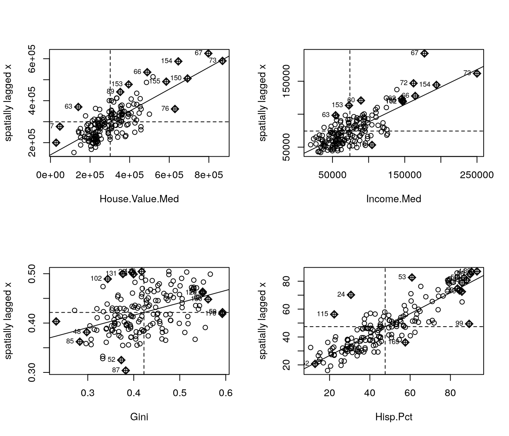
The spatial lag plots show spatial autocorrelation of the variables, as they are generally gathered near the diagonal line. The lower left quadrant contains tracts with low values clustered with other low values (low-low), while the upper right quadrant contains observations with spatially autocorrelated high values (high-high). Later we will visualize these areas on a map. The Hispanic percentage variable has a high statistic value, and the plot shows most observations tightly grouped along the diagonal. Gini, on the other hand, has a relatively low value, and the graph displays how much wider spread the lagged observations are.
Local Indicators of Spatial Autocorrelation (LISA)
While useful, these global tests are somewhat unsatisfying. Just like the post-hoc tests are more interesting than the ANOVA results themselves, the local versions of these tests are more informative and revealing of the underlying structure. Local tests allow us to identify where the most significant correlations are, where similar values are clustered. These can be mapped. As we will see, the three different tests will produce somewhat different results, some identifying significant regions which the others do not. It is important to remember that these tests constitute exploratory data analysis, discovering areas of interest, which should be further explored.
I’ll begin by using the local_moran function from sfdep, converting the results to a matrix for faster processing. I’ll also write a function to draw the maps.
lmorans <- map(var_vals, \(x) local_moran(x, nb, wt) %>% qM)
moran_map <- function(cut) {
base_plot +
geom_sf(data = to_sf(abq_data), aes(fill = cut),
alpha = 0.5, show.legend = T) +
geom_sf_text(data = council_dists, aes(label = district)) +
theme_void()
}I will create one map showing areas of positive, negative, or lack of SA. A second map will show in which regions the correlation values are statistically significant. Because the data is in matrix form, I can use the ss function, which is even faster than the already fast fselect used on data frames.
mmaps <- map(seq_len(length(var_names)), \(x) {
p1 <- moran_map(
cut(ss(lmorans[[x]], ,"z_ii"), c(-Inf, -1.96, 1.96, Inf))) +
scale_fill_discrete(
"Local Moran's I",
palette = c("red", "white", "blue"),
labels = c("Negative SA", "No SA", "Positive SA"), drop = FALSE) +
labs(title = "", caption = "")
p2 <- moran_map(
cut(ss(lmorans[[x]], ,"p_folded_sim"), c(-Inf, 0.05, Inf))) +
scale_fill_discrete(
"p-value", palette = c("orange", "white"),
labels = c("< 0.05", ">= 0.05"))
list(p1, p2)
})
map2(mmaps[c(1,4)], var_names[c(1,4)], \(x, y) {
c(p1, p2) %<-% x
wrap_plots(p1, p2) + plot_annotation(
title = glue("Spatial Autocorrelation - {y}"))})[[1]]Zoom: 11
Zoom: 11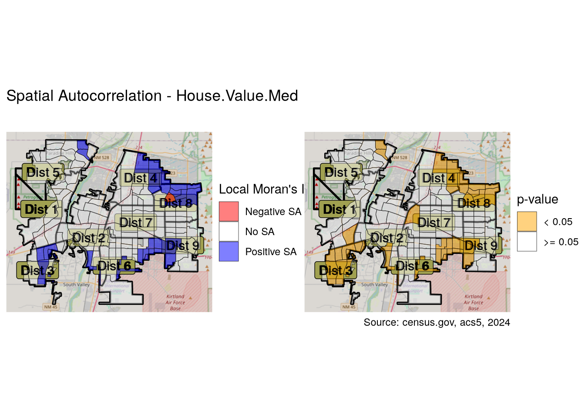
[[2]]Zoom: 11
Zoom: 11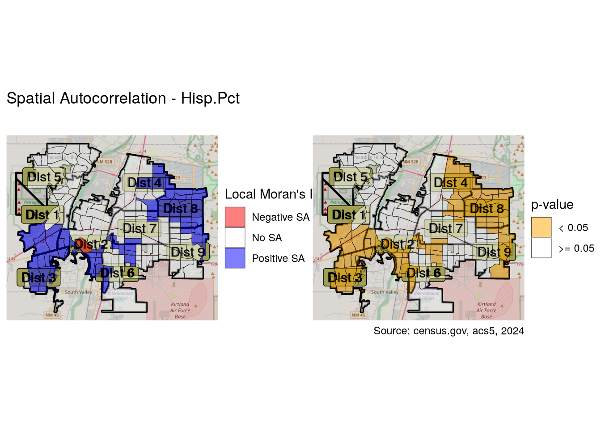
Most of the areas showing positive (or negative) SA also have p-values showing statistical significance. On the other hand, the statistical significance of the “No SA” designation only holds for a minority of these tracts.
Going down one further level, we can map the nature of the SA, identifying whether they represent clusters of high values or low values. We can also map the “high-high” and “low-low” observations we saw earlier in the upper right and lower left of the Moran plots we made earlier.
First I will run local moran tests for each variable. The sfdep version of the test returns a p-value as well as the quadrant description in the pysal variable.
lm_lisas <- map(var_names, \(x) {
abq_data %>% to_sf %>%
mutate(
moran = local_moran(abq_data[[x]], nb, wt),
) %>% unnest(moran) %>%
fmutate(quadrant = factor(
iif(p_folded_sim <= 0.05, as.character(pysal), "Not Significant"),
levels = c("High-High", "High-Low", "Low-High",
"Low-Low", "Not Significant")))})Now I’ll create the mapping function. Note that I’m using scale_fill_discrete, which will misbehave in the case that some of the factor levels have no data. For it to work, it is not enough to add drop=FALSE as an argument to the scale function, but the associated geom_sf function must specify show.legend=TRUE. I’ve also used the fast version of ifelse provided by the kit package.
lm_plots <- map(
lm_lisas, \(x) base_plot +
geom_sf(data = x, aes(fill = quadrant), alpha = 0.4, show.legend = T) +
scale_fill_manual("Local Moran",
values = c("blue", "skyblue", "salmon", "#BB112A", "#FFF"),
drop = F
) +
labs(caption = ""))While the local_moran function returns p-values, for Getis-Ord and Geary’s C, I need to use the _perm version of the relevant function. This version runs a Monte Carlo simulation, which is necessary to generate p-values, and requires a number of simulations argument.
gi_plots <- map(var_names, \(x) {
lisa <- abq_data %>% to_sf %>%
transmute(
gs = local_gstar_perm(abq_data[[x]], nb_gi, wt_gi, nsim = 199)) %>%
unnest(gs) %>%
fcompute(cluster = case_when(
p_folded_sim > 0.05 ~ "Not Significant",
gi_star < 0 ~ "Low",
gi_star > 0 ~ "High"
))
base_plot +
geom_sf(data = lisa, aes(fill = cluster),
alpha = 0.4, show.legend = T) +
scale_fill_manual("GI*", values = c(
"High" = "blue", "Low" = "red", "Not Significant" = "white"
)) + labs(title = "", caption = "")})lg_lisas <- map(var_names, \(x) abq_data %>% to_sf %>%
transmute(local_c = local_c_perm(abq_data[[x]], nb, wt, nsim = 199)) %>%
unnest(local_c) %>%
mutate(cluster = factor(
iif(p_folded_sim <= 0.05, as.character(cluster), "Not Significant"),
levels = c("High-High", "Low-Low", "Negative",
"Other Positive", "Not Significant"))))
lg_plots <- map(lg_lisas, \(x)
base_plot +
geom_sf(data = x, aes(fill = cluster),
alpha = 0.4, show.legend = T) +
scale_fill_discrete("Local Geary's C",
palette = c("blue", "red", "green", "orange", "#FFF"),
drop = F) + labs(title = ""))cuts <- map(var_names, \(x) make_cuts(abq_data[[x]]))
vmaps <- map2(cuts, var_names, \(cut, lab) quantile_map(cut, lab))compare_lisa <- map2(seq_len(length(lm_plots)), var_names,
\(x, y) vmaps[[x]] + lm_plots[[x]] + gi_plots[[x]] + lg_plots[[x]] +
plot_layout(nrow = 2) +
plot_annotation(title = glue("Albuquerque, NM - {y} - SA")))compare_lisa[[1]]Zoom: 11
Zoom: 11
Zoom: 11
Zoom: 11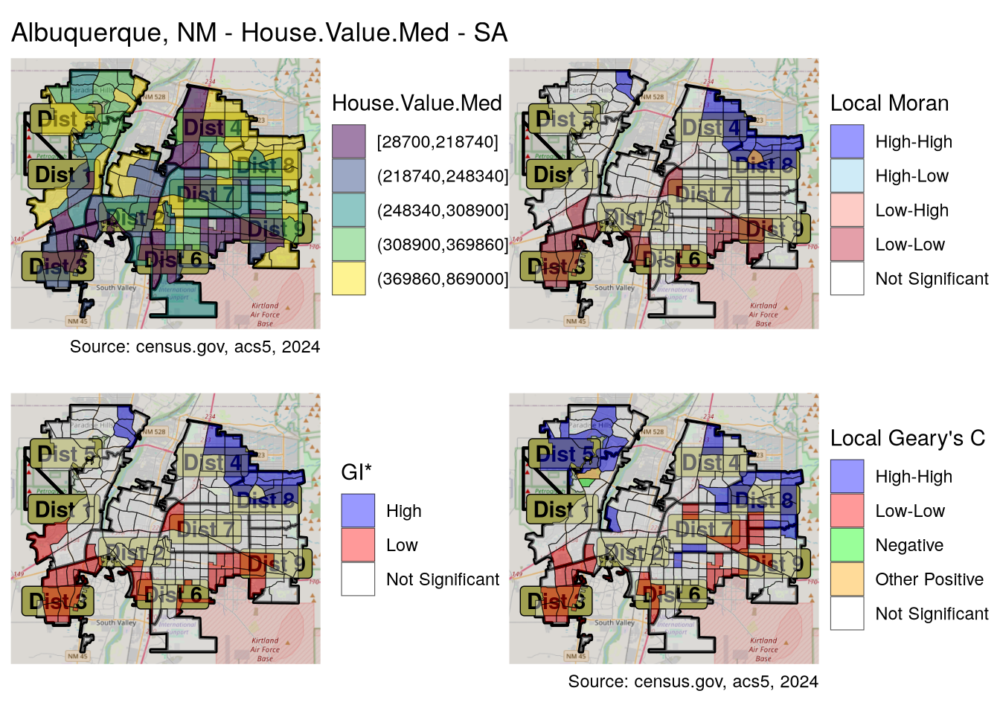
All three have the same basic outlines, with high values clustered in the northeast and low values clustered in the south and southwest. Moran and GI are very similar, while Geary’s identifies quite a few more areas.
compare_lisa[[4]]Zoom: 11
Zoom: 11
Zoom: 11
Zoom: 11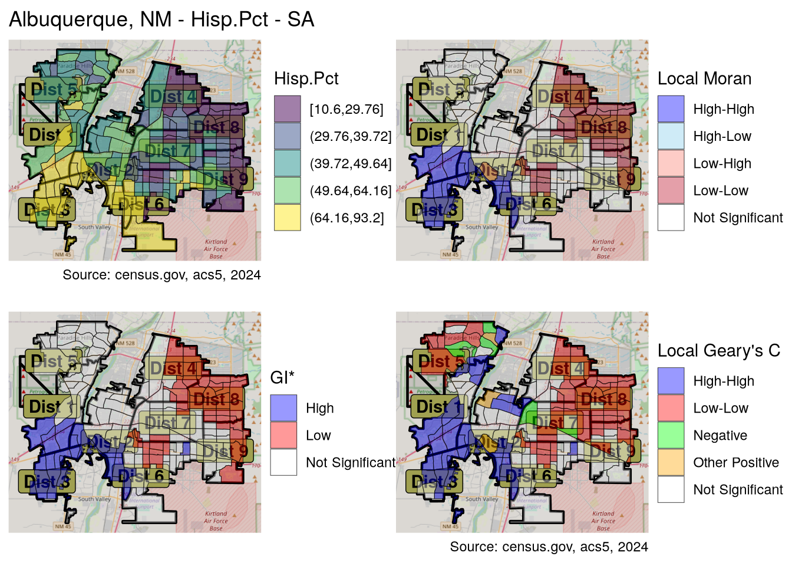
All three methods expose a high degree of local clustering along racial lines. In fact, Geary’s C shows that such clustering is prominent throughout the city, not only the NE-SW divide identified by the others.
lg_tables <-
map(lg_lisas, \(x) st_drop_geometry(x) %>% gv("cluster") %>%
add_vars(districts) %>% table %>% t)
names(lg_tables) <- var_names
table_gt <- function(table) table %>% qDF %>% rownames_to_column("district") %>% gt
table_gt(lg_tables$Hisp.Pct)| district | High-High | Low-Low | Negative | Other Positive | Not Significant |
|---|---|---|---|---|---|
| 1 | 11 | 1 | 0 | 0 | 5 |
| 2 | 10 | 0 | 0 | 2 | 9 |
| 3 | 17 | 0 | 0 | 0 | 2 |
| 4 | 0 | 10 | 0 | 0 | 8 |
| 5 | 3 | 7 | 3 | 1 | 2 |
| 6 | 1 | 8 | 0 | 0 | 15 |
| 7 | 1 | 10 | 2 | 1 | 7 |
| 8 | 0 | 18 | 0 | 0 | 1 |
| 9 | 0 | 7 | 0 | 0 | 11 |
With the exceptions of district 6, and to a lesser extent district 9, most Albuquerque districts show significant racial clustering. We can compare this to the local Moran results.
lm_tables <-
map(lm_lisas, \(x) st_drop_geometry(x) %>% gv("quadrant") %>%
add_vars(districts) %>% table %>% t)
names(lm_tables) <- var_names
table_gt(lm_tables$Hisp.Pct)| district | High-High | High-Low | Low-High | Low-Low | Not Significant |
|---|---|---|---|---|---|
| 1 | 6 | 0 | 0 | 0 | 11 |
| 2 | 7 | 0 | 1 | 0 | 13 |
| 3 | 17 | 0 | 0 | 0 | 2 |
| 4 | 0 | 0 | 0 | 11 | 7 |
| 5 | 0 | 0 | 0 | 0 | 16 |
| 6 | 0 | 0 | 0 | 7 | 17 |
| 7 | 0 | 0 | 0 | 5 | 16 |
| 8 | 0 | 0 | 0 | 19 | 0 |
| 9 | 0 | 0 | 0 | 5 | 13 |
Moran’s test does not identify as many significant areas, but still all areas of District 8, and all but one of District 3 show significant racial clustering. In any case, this is a picture of a highly segregated city.
As a final exercise, I will compare selecting neighbors based on contiguity or 5 nearest neighbors.
lg_k5_plots <- map(var_names, \(x) {
lisa <- abq_data %>% to_sf %>%
transmute(
local_c = local_c_perm(abq_data[[x]], nb_k5, wt_k5, nsim = 199)) %>%
unnest(local_c) %>%
mutate(cluster = factor(
iif(p_folded_sim <= 0.05, as.character(cluster), "Not Significant"),
levels = c("High-High", "Low-Low", "Negative",
"Other Positive", "Not Significant")))
base_plot +
geom_sf(data = lisa, aes(fill = cluster), alpha = 0.4, show.legend = T) +
scale_fill_discrete(
"Local Geary's C\n5-Nearest-Neighbors",
palette = c("blue", "red", "green", "orange", "#FFF"),
drop = F) +
labs(title = "")
}
)
k5_compare <- map2(seq_len(length(lg_plots)), var_names, \(x, y)
lg_plots[[x]] + lg_k5_plots[[x]] + plot_annotation(
title = glue("Queen contiguity vs. 5-nearest neighbors\n{y}")))
k5_compare[[1]]; k5_compare[[4]]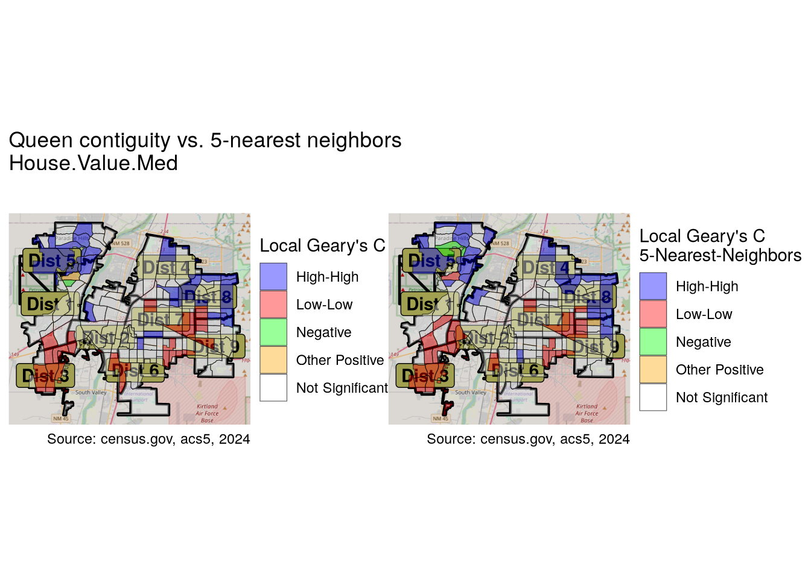
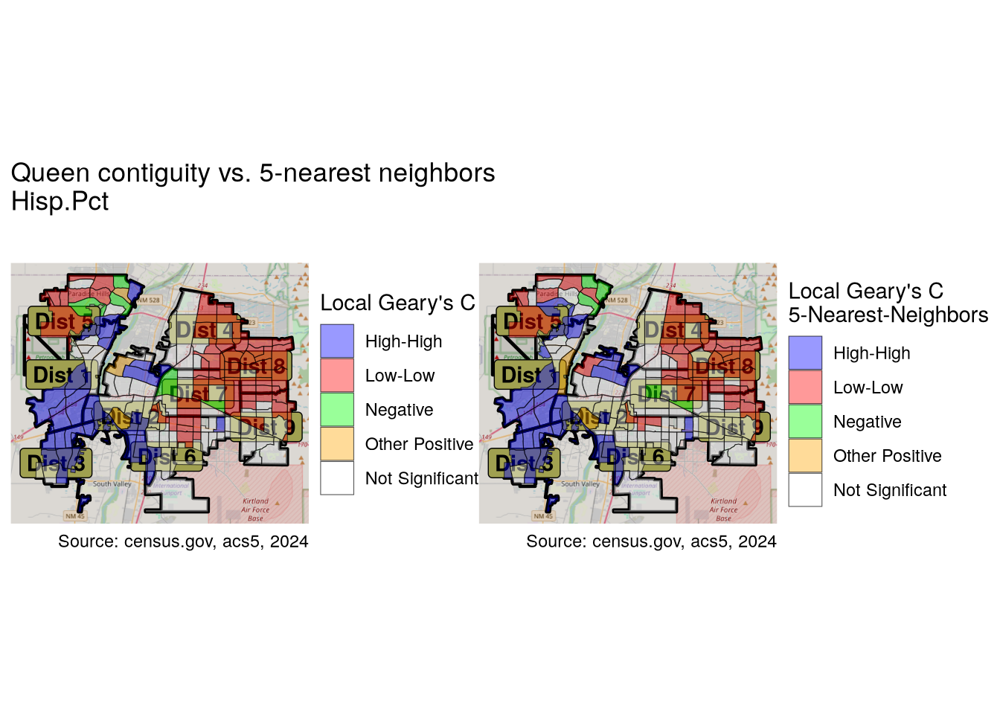
The results are similar. In this case, contiguity reveals more areas of interest than the k-nearest neighbor approach.
Conclusion
Visualizing the distribution and correlation of the chosen variables allowed us to see how they are spread geographically, and identified many relationships, some expected, some not. Through spatial autocorrelation we were able to identify the areas of the city where particularly high or low values of the variables are situated. Both through visual mapping and tables, we were able to see the differences across districts, and have gained a number of insights regarding the variance between districts even before doing formal ANOVA tests. This will be the subject of the next article. As seen at the beginning, few if any of the variables are normally distributed, so the testing will not be straight-forward.
Footnotes
https://en.wikipedia.org/wiki/Tobler’s_first_law_of_geography↩︎
The statistic is defined as \({\displaystyle G_{i}^{*}={\frac {\sum _{j}w_{ij}x_{j}}{\sum _{j}x_{j}}}}\)↩︎
The statistic is defined as \({\displaystyle I={\frac {N}{W}}{\frac {\sum _{ij}w_{ij}(x_{i}-{\bar {x}})(x_{j}-{\bar {x}})}{\sum _{i}(x_{i}-{\bar {x}})^{2}}}}\)↩︎
The statistic is defined as \({\displaystyle C={\frac {(N-1)\sum _{i}\sum _{j}w_{ij}(x_{i}-x_{j})^{2}}{2S_{0}\sum _{i}(x_{i}-{\bar {x}})^{2}}}}\)↩︎